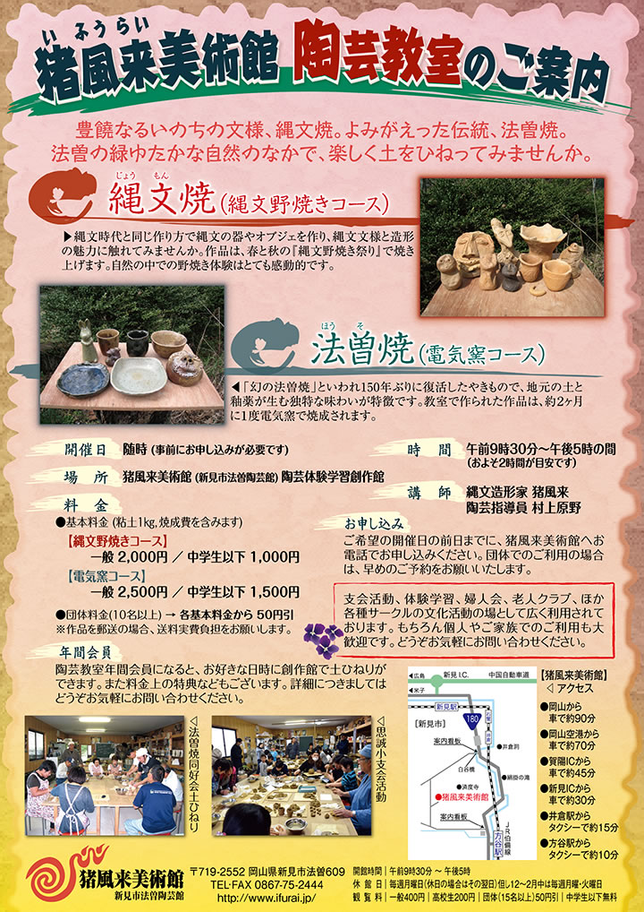
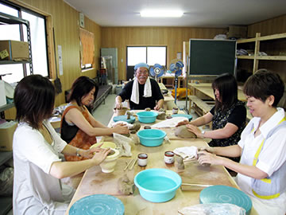
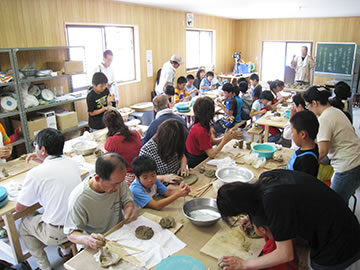

|  | |
| 【陶芸教室チラシ】 →PDF版を開く | |
縄文時代と同じ作り方で、縄文の器やオブジェを作ってその魅力に触れてみませんか。
春と秋の縄文野焼き祭りでは、作った作品を自分たちで焼き上げます。
野外での野焼き体験はとても感動的です。
また電気窯コースでは、釉薬をかけた作品に挑戦できます。
みなさんのご参加お待ちしております。
随時開催しておりますので、お申し込みの際にご希望の日時をお伝えください。
| 開催日 |
随時 （事前にお申し込みが必要です） |
|---|---|
| 時間 | 午前９時３０分～午後５時の間（およそ２時間が目安です） |
| 場所 | 猪風来美術館（新見市法曽陶芸館）陶芸体験学習創作館 |
| 講師 | 造形作家 猪風来 陶芸指導員 村上原野 |
| コース |
【Ａ 縄文野焼きコース】 初心者は土面・シーサー・小さい土器など、手慣れた方は縄文土器・土偶など。 【Ｂ 電気窯コース】 法曽粘土を使用して、皿や茶碗などの器を作ります。 |
| 焼成 |
【Ａ 縄文野焼きコース】 春（４月）と秋（１０月）の縄文野焼き祭りにて 【Ｂ 電気窯コース】 ２ヶ月に１回 |
| 申込み | ご希望の開催日の前日までにお電話ください。 （団体でのご利用の場合は、早めの予約をお願いいたします） |
| 連絡先 | 岡山県新見市法曽609 猪風来美術館(新見市法曽陶芸館) TEL･FAX (0867)75-2444 |
支会活動、体験学習、婦人会、老人クラブ、その他各種サークルの文化活動の場としてご利用できます。
もちろん個人で縄文や陶芸に興味ある方も、ぜひおいでください。
お問い合わせお待ちしております。
|  |  |
| 【陶芸教室の風景】 | 【正田小５年生支会活動にて】 |